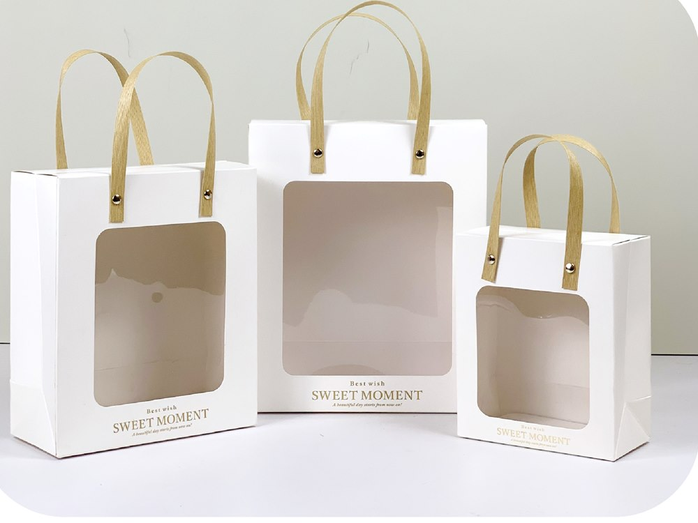

Một chiếc túi giấy đi từ yêu cầu sử dụng đến thành phẩm qua nhiều quyết định về vật liệu, kích thước và thiết kế. Video trong bài do Sobi cung cấp, giới thiệu hoạt động sản xuất túi giấy bằng máy móc. Khi xem, bạn có thể hình dung rõ hơn quá trình gia công; còn thông số kỹ thuật và cách hoàn thiện vẫn cần thống nhất riêng cho từng đơn hàng.
Từ nhu cầu đóng gói đến quy cách túi
Trước khi bàn đến máy móc, cần biết túi sẽ đựng gì, hộp có kích thước bao nhiêu và khách mang theo thế nào. Sobi tập trung vào kraft và túi giấy mỹ thuật cao cấp, cứng cáp, với phương án màu sắc và in theo yêu cầu. Loại giấy phù hợp phải đi cùng cấu trúc và mục đích sử dụng.
Hồ sơ trao đổi nên có ảnh hoặc mẫu sản phẩm, rộng – cao – hông túi dự kiến, số lượng, file logo và phong cách mong muốn. Nếu dùng lại thiết kế cũ, cần cung cấp phiên bản cuối đã duyệt. Một bộ thông tin đầy đủ giúp giảm việc điều chỉnh sau khi quy cách đã chuyển sang bước gia công.
Duyệt giấy, bố cục và màu trước gia công
Bản thiết kế cần thể hiện mặt trước, mặt sau và những vùng có nội dung. Vị trí gấp, dán và gắn quai nên được kiểm tra để logo không rơi vào vùng khó nhìn hoặc bị che. Với màu nhận diện quan trọng, cần đối chiếu trên chất giấy dự kiến thay vì chỉ duyệt bằng hình ảnh điện thoại.
Mẫu hình khối giúp kiểm tra độ vừa, còn mẫu in giúp kiểm tra màu và chi tiết. Hai loại bằng chứng này không hoàn toàn thay thế nhau. Nếu có thay đổi sau khi duyệt, nên ghi rõ phiên bản mới và xác nhận lại phần bị ảnh hưởng trước khi tiếp tục.

Video cho thấy gì và cần hỏi thêm điều gì?
Video từ Sobi là tư liệu về sản xuất túi giấy bằng máy tại Sobi. Nó giúp người xem tiếp cận hoạt động gia công trực quan hơn ảnh tĩnh. Tuy nhiên, một đoạn quay ngắn không đủ xác định năng suất, model máy, mức tự động hóa của toàn bộ dây chuyền hoặc mọi kỹ thuật in có thể nhận.
Các công đoạn thường gặp trong làm túi gồm chuẩn bị giấy, in khi có yêu cầu, tạo nếp, gấp dán và hoàn thiện quai theo quy cách. Thứ tự và cách thực hiện phụ thuộc mẫu túi. Khi đặt hàng, hãy hỏi công đoạn áp dụng cho mẫu của mình, không suy ra toàn bộ quy trình từ một cảnh quay.
Kiểm tra thành phẩm theo mẫu đã thống nhất
Các điểm nên đối chiếu gồm kích thước, màu giấy và màu in, vị trí logo, nếp gấp, mép dán, phần miệng, đáy và quai. Đặt sản phẩm thật vào túi để kiểm tra thao tác. Một chiếc túi nhìn đẹp khi rỗng vẫn có thể không phù hợp nếu hông quá hẹp hoặc miệng khó mở khi đóng hàng.
Số lượng, thời gian, yêu cầu đóng kiện và báo giá cần được xác nhận theo đơn cụ thể. Hãy xác nhận lịch giao dự kiến khi quy cách và số lượng đã được chốt. Bạn có thể gửi nhu cầu qua trang liên hệ hoặc xem thêm trang quy trình để chuẩn bị trước khi trao đổi.
Video sản xuất tại Sobi
Nếu trình phát không hiển thị, bạn có thể mở video bằng liên kết Facebook phía trên. Các công đoạn và quy cách áp dụng được thống nhất theo từng đơn hàng.
Câu hỏi thường gặp
Video có phải tư liệu sản xuất của Sobi không?
Đây là video giới thiệu hoạt động sản xuất bao bì giấy từ fanpage Sobi, có các cảnh gia công và thành phẩm quà Noel. Quy cách thực tế được xác nhận theo mẫu của từng đơn hàng.
Có thể dùng video để xác định thời gian giao hàng không?
Không. Thời gian phụ thuộc vật liệu, số lượng, thiết kế và kế hoạch sản xuất của đơn hàng; cần được trao đổi và xác nhận riêng.
Đọc tiếp và trao đổi cùng Sobi
Chuẩn bị file logo · Checklist duyệt mẫu.
Sobi tập trung vào túi giấy kraft và túi giấy mỹ thuật cao cấp, cứng cáp, có thể điều chỉnh màu sắc và phương án in theo nhu cầu. Để chọn quy cách phù hợp, hãy gửi ảnh hoặc mẫu sản phẩm, kích thước, số lượng và mong muốn thiết kế qua form tư vấn. Chất giấy, màu, kiểu quai, thời gian và báo giá được thống nhất theo từng đơn hàng.
Bình luận
Chia sẻ ý kiến của bạn
Bình luận mô phỏng, chỉ hiển thị trong phiên xem này và không được đăng lên website thật.